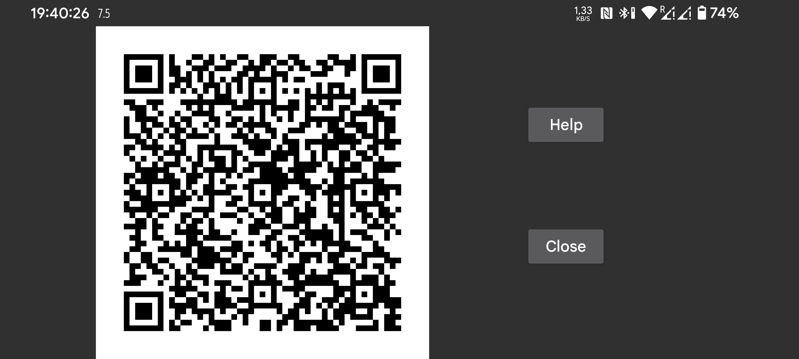

You can configure the other side of a mirror connection by scanning a QR code with left menu → Photo on the other phone.
With left middle menu→Mirror→Auto QR, both sides of the connection are automatically generated. You can use it to send all data from this phone to another phone.
This way accidentally a lot of connections can be generated. You can delete them by touching it and pressing Modify and then Delete.
Use left middle menu→Mirror→Add Connection → QR to manually configure one side of the connection on one phone and configure the other side by scanning the QR code.